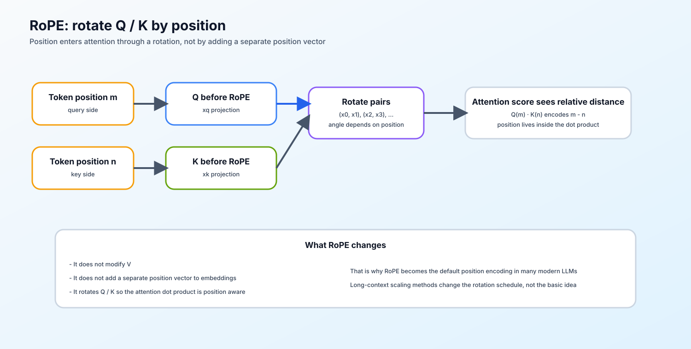

新版 Notebook 任务
打开本课 Notebook 官方版本
03. RoPE Tutorial | 旋转位置编码教程
难度： Medium | 环境： CPU-first | 标签： 基础实现, 位置编码, RoPE | 目标人群： 基础实现学习者
本节导读
Attention 本身只看 token 之间的相似度，并不知道谁在前、谁在后。没有位置编码，模型看到的更像一袋 token；但如果位置处理得太死，模型又很难泛化到更长的上下文。
RoPE 的做法不是给 token 额外加一个位置向量，而是把位置信息写进 Query 和 Key 的旋转里，让注意力点积天然感知相对距离。本节会用纯 PyTorch 实现 RoPE，重点看清成对维度旋转、位置频率和 attention 内积之间的关系。完成后，你应该能把它接到后面的 MHA / GQA 和 KV Cache 实现里。
关键词： RoPE, positional encoding, complex tensor
当前题目检查清单
- TODO 1: 用极坐标生成复数张量 (提示: torch.polar)
- TODO 2: 将 xq, xk 从实数张量转为复数张量
- TODO 3: 进行复数乘法，并转回实数张量
展开官方原理、图解与任务要求
前置阅读
导语： 先确认 Query / Key 的形状和注意力点积如何计算，再观察旋转角度和位置频率如何改变相对位置信息。
Step 1: 核心思想与痛点
本节说明 RoPE 的设计动机与核心思想。
为什么需要 RoPE？
原生的 Transformer 使用绝对位置编码（如正弦波或可学习参数），导致模型很难泛化到比训练集更长的序列。我们希望模型能在计算 Attention 时感知到 Token 之间的相对距离。
RoPE 的本质：
“借用复数的旋转”。通过将 Query 和 Key 的向量映射到复数空间并旋转特定角度，在计算内积（Dot-product）时，结果自然就带有了相对位置信息 (m−n)。其中，m 是 Query 的位置，n 是 Key 的位置，两者之差 m−n 就是它们之间的相对距离——RoPE 通过复数旋转让 Attention 内积的结果只依赖于这个差值，从而让 Attention 内积的结果依赖于 Token 间的相对位置。
Step 2: 代码实现框架
在 PyTorch 中，最高效的 RoPE 实现方式之一是利用复数乘法。我们将最后一维切分为两半并组合成复数形式，再乘以预先计算好的复数旋转矩阵 eimθj。完成旋转后，再使用 torch.view_as_real 恢复为实数表示。
因此实现时的主线其实很固定：先算出 freqs_cis （即预计算的复数旋转因子），再把它和 xq / xk（即 Attention 中的 Query 和 Key 投影张量）做广播对齐，最后完成复数旋转并回到原始实数形状。这样学习者在写 TODO 1/2/3 时，就能清楚地知道每段代码对应实现流程中的哪个环节。
可视化：RoPE 在 Attention 里站哪
RoPE 不直接改 value，也不是额外加到 embedding 上；它作用在 Query / Key 上，让 attention score 带上相对位置信息。
token hidden states
│
├── q_proj ─► Q ─► RoPE rotate ─┐
│ │
├── k_proj ─► K ─► RoPE rotate ─┼─► QK^T / sqrt(d) ─► attention weights
│ │
└── v_proj ─► V ─────────────────┘ │
▼
weighted sum V

张量形状可以按这条线记：
| 阶段 |
典型形状 |
说明 |
| hidden states |
[B, T, D] |
block 的输入表示 |
| Q / K |
[B, T, H, Dh] |
每个 head 的 query/key |
| RoPE 后 Q / K |
[B, T, H, Dh] |
形状不变，只旋转偶/奇维 |
| attention scores |
[B, H, T, T] |
位置关系进入打分 |
读代码时只要抓住一点：RoPE 改的是 Q/K 的方向关系，不改 V 的内容存储。
Step 3: 核心公式与张量维度
这一节把频率、位置和维度对齐关系摆清楚，方便把数学公式和代码里的广播一步一步对上。
-
预计算旋转角 (Precompute Frequencies)
频率计算公式：
θj=10000−2j/d。其中，j=0,1,2,…,d/2−1 ，是维度索引，用于遍历每一组维度对（最后一维两两一组）。d 是 Head Dimension，即每个注意力头的维度。
关于基数 10000 的选择说明：基数 10000 直接继承自 Transformer 原始论文（Vaswani et al., 2017）中的正弦位置编码设计。其数学意义在于：当 j=0 时，频率θ0=1 对应最快的旋转速度（m 每增加 1，角度旋转 1 弧度），用于捕获相邻 Token 间的细微相对位置。当 j=d/2−1 时，频率 θd/2−1≈1/10000，对应最慢的旋转速度，负责感知长距离的绝对位置。
这一设计使得不同维度拥有指数级分布的频率，让模型像多波段接收器一样，同时兼顾局部和全局的位置感知。10000是原论文作者通过实验验证的有效平衡点——过大（如 106）会导致高维度信号变化过缓，浪费编码能力；过小（如 100）则会限制模型的长程依赖能力。
生成复数形式的极坐标：
eimθj=cos(mθj)+isin(mθj)。其中，m指的是Token 在序列中的绝对位置索引，m=0,1,2,…,L−1（L为序列长度）
-
应用旋转 (Apply Rotary Embedding)
将输入的 Query 或 Key 视为复数，具体做法是将最后一维切分为等长的两半，前一半作为实部，后一半作为虚部：
x=xreal+i⋅ximag
利用复数乘法直接完成旋转矩阵的运算：
xrotated=x×eimθj
-
实现提示
reshape_for_broadcast 的作用是将 freqs_cis（形状为 [seq_len, d/2]）变形为 [1, seq_len, 1, d/2]，使其与 xq/xk（形状为[batch, seq_len, heads, d]）在 batch 和 head 维度上广播对齐（其中，batch 批次大小，seq_len指序列长度）。先对齐维度，再做复数乘法，旋转位置编码才会同时正确作用到 batch 和 head 维度。
Step 4: 动手实战
这里开始把频率预计算、复数转换和旋转还原落到最小可运行代码里，重点看每一步张量形状怎么变。
要求：请补全下方 precompute_freqs_cis 和 apply_rotary_emb 函数。
提示：可以使用 torch.view_as_complex 和 torch.view_as_real 这两个核心函数！
题目与测试代码 · Cell 9
def precompute_freqs_cis(dim: int, end: int, theta: float = 10000.0):
"""
预计算复数旋转因子 freqs_cis。
Args:
dim: head_dim，必须为偶数
end: 序列长度
theta: 基数，默认 10000
Returns:
freqs_cis: 形状为 [end, dim//2] 的复数张量
"""
# ==========================================
# TODO 1: 用极坐标生成复数张量 (提示: torch.polar)
# 1. 计算逆频率向量 inv_freq = 1/(theta ** (2j/d))
# torch.arange(0, dim, 2) 步长为 2，对应公式中的 2j
# 2. 生成位置索引 t = [0, 1, ..., end-1]
# 3. 计算角度矩阵 angles = outer(t, inv_freq)
# 4. 用 torch.polar 生成复数 e^{i * angles}
# ==========================================
#inv_freq = ??
#t = ??
#angles = ??
#freqs_cis = ??
return freqs_cis
# 将频率张量扩展到可广播形状，供 Step 3 的复数乘法使用
def reshape_for_broadcast(freqs_cis: torch.Tensor, x: torch.Tensor):
"""
将 freqs_cis 变形为与 x 广播对齐的形状。
假设 x 的形状为 [batch, seq_len, heads, head_dim//2]（复数形式），
将 freqs_cis 从 [seq_len, head_dim//2] 变形为 [1, seq_len, 1, head_dim//2]。
"""
ndim = x.ndim
shape = [d if i == 1 or i == ndim - 1 else 1 for i, d in enumerate(x.shape)]
return freqs_cis.view(*shape)
def apply_rotary_emb(
xq: torch.Tensor,
xk: torch.Tensor,
freqs_cis: torch.Tensor,
) -> tuple[torch.Tensor, torch.Tensor]:
"""
将旋转位置编码应用到 Query 和 Key 上
Args:
xq: [batch, seq_len, heads, head_dim]
xk: [batch, seq_len, heads, head_dim]
freqs_cis: [seq_len, head_dim//2]，预计算的旋转因子
Returns:
旋转后的 xq, xk，形状与输入一致
"""
# ==========================================
# TODO 2: 将 xq, xk 从实数张量转为复数张量
# 提示: 先把最后一维拆成两个一组，再转成复数
# 1. 提升精度到 FP32: .float()
# 2. 将最后一维 head_dim 拆分为 (-1, 2)，其中 2 对应实部和虚部
# 3. 用 torch.view_as_complex 转为复数
# 提示：reshape(*xq.shape[:-1], -1, 2) 保留前面所有维度，最后变为 (..., -1, 2)
# ==========================================
# xq_complex = ???
# xk_complex = ???
freqs_cis = reshape_for_broadcast(freqs_cis, xq_complex)
# 确保类型一致
freqs_cis = freqs_cis.to(xq_complex.dtype)
# ==========================================
# TODO 3: 进行复数乘法，并转回实数张量
# 步骤：
# 1. 复数乘法: xq_complex * freqs_cis（自动广播）
# 2. 用 torch.view_as_real 转回实数，形状变为 (..., 2)
# 3. 用 .flatten(-2) 将最后两维合并回 head_dim
# 4. 用 .type_as(xq) 恢复为输入的数据类型
# ==========================================
# xq_out = ??
# xk_out = ??
return xq_out.type_as(xq), xk_out.type_as(xk)
题目与测试代码 · Cell 10
# 运行此单元格以测试你的实现
def test_rope():
try:
print("=" * 60)
print("开始测试 RoPE 旋转位置编码")
print("=" * 60)
batch_size, seq_len, num_heads, head_dim = 2, 16, 4, 64
# Test 1: 形状测试
print("\n【Test 1】形状测试")
xq = torch.randn(batch_size, seq_len, num_heads, head_dim)
xk = torch.randn(batch_size, seq_len, num_heads, head_dim)
freqs_cis = precompute_freqs_cis(head_dim, seq_len)
xq_out, xk_out = apply_rotary_emb(xq, xk, freqs_cis)
assert xq_out.shape == xq.shape, f"Query 输出形状错误: 期望 {xq.shape}, 实际 {xq_out.shape}"
assert xk_out.shape == xk.shape, f"Key 输出形状错误: 期望 {xk.shape}, 实际 {xk_out.shape}"
assert freqs_cis.shape == (seq_len, head_dim // 2), f"频率张量形状错误"
# 核心修复：防止占位符作弊，输出绝不能等于输入
assert not torch.allclose(xq, xq_out, atol=1e-5), "TODO 3 未完成: 输出与输入完全相同，RoPE 旋转未生效！"
print(" ✅ 输出形状测试通过")
print(" ✅ 频率张量形状测试通过")
# Test 2: 数值范围测试
print("\n【Test 2】数值范围测试")
norm_before = torch.norm(xq, dim=-1)
norm_after = torch.norm(xq_out, dim=-1)
assert torch.allclose(norm_before, norm_after, rtol=1e-4, atol=1e-5), "RoPE 改变了向量模长！"
print(" ✅ 向量模长保持不变（旋转不变性）")
assert not torch.isnan(xq_out).any(), "输出包含 NaN！"
assert not torch.isinf(xq_out).any(), "输出包含 Inf！"
print(" ✅ 无 NaN/Inf 数值异常")
# Test 3: 相对位置编码验证
print("\n【Test 3】相对位置编码验证")
pos0 = xq_out[:, 0, :, :]
pos1 = xq_out[:, 1, :, :]
assert not torch.allclose(pos0, pos1, rtol=1e-3), "不同位置的输出相同，位置编码失败！"
print(" ✅ 位置编码生效（不同位置输出不同）")
# Test 4: 精度稳定性测试
print("\n【Test 4】精度稳定性测试")
xq_fp16 = torch.randn(1, 8, 2, head_dim, dtype=torch.float16)
xk_fp16 = torch.randn(1, 8, 2, head_dim, dtype=torch.float16)
freqs_fp16 = precompute_freqs_cis(head_dim, 8)
xq_out_fp16, xk_out_fp16 = apply_rotary_emb(xq_fp16, xk_fp16, freqs_fp16)
assert xq_out_fp16.dtype == torch.float16, "输出类型错误！"
assert not torch.isnan(xq_out_fp16).any(), "FP16 输入导致 NaN！"
print(" ✅ FP16 输入处理正确")
print(" ✅ 精度提升机制工作正常")
print("\n" + "=" * 60)
print(" RoPE 算子实现通过测试。")
print(" 所有测试用例均已通过")
print("=" * 60)
except NotImplementedError:
print("\n❌ 测试失败: 请先完成 TODO 部分的代码！")
raise
except (AttributeError, NameError, TypeError) as e:
print(f"\n❌ 测试失败: 代码可能未完成")
raise NotImplementedError("请先完成 TODO 部分的代码！") from e
except AssertionError as e:
print(f"\n❌ 测试失败: {e}")
raise
except Exception as e:
print(f"\n❌ 发生未知异常: {type(e).__name__}: {e}")
raise
test_rope()
本区由当前 Notebook 题目区生成。下面的精讲用于概念练习；回到 Notebook 时以本区的函数签名、TODO 和测试为准。参考答案及可选实验请在 Notebook 中查看。